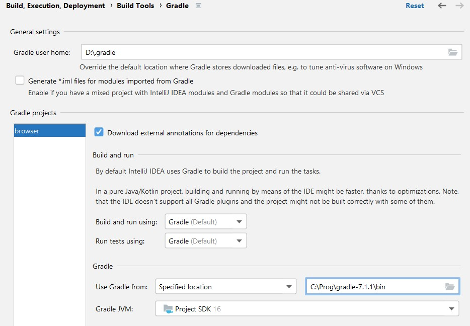
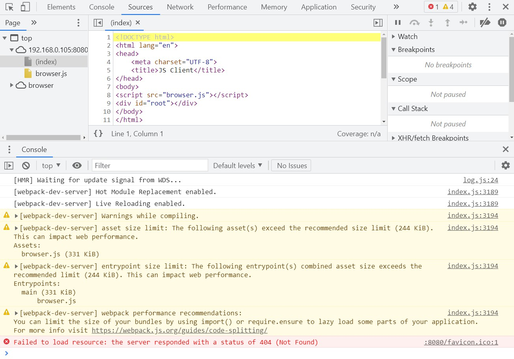

<!doctype html>
<html>
	<head>
		<meta charset="utf-8">
		<meta name="viewport" content="width=device-width, initial-scale=1.0, maximum-scale=1.0, user-scalable=no">

		<title>Среда разработки</title>

		<link rel="stylesheet" href="dist/reset.css">
		<link rel="stylesheet" href="dist/reveal.css">
		<link rel="stylesheet" href="dist/theme/beige.css" id="theme">
		<link rel="stylesheet" href="plugin/highlight/github.css">
	</head>
	<body>
		<div class="reveal">
			<div class="slides">
                <section data-markdown data-separator="^\n---\n$" data-separator-vertical="^\n--\n$">
                    <script type="text/template">
# Создание проекта

--

### Тип проекта


--

### Настройка проекта


--

### Настройка gradle



--

### Индексация проекта


--

### Структура проекта


---

# Запуск проекта

--

### Конфигурации запуска


--

### Задачи gradle


--

### WebPack dev server


--

### Приложение в браузере


---

# Отладка

--

### Способы отладки

- В IDE (работает только в версии Ultimate).
- В отладчике браузера (работает с версией плагина 1.5.21).

--

### Отладчик в браузере

Вызывается F12 или через меню.



--

### Исходный код


--

### Отладчик


--

### Контекст в JS


---

# Программа для HTML

--

### Платфорозависимая дата

```Kotlin
import kotlin.js.Date

fun Node.sayHello() {
    val date = Date(Date.now())
    append {
        div {
            +date.toDateString()
        }
    }
}
```

--

### Просмотр в отладчике


--

## Упростим проект

```index.html```:

```Html
	< div id="root"></ div>
	< script src="browser.js"></ script>
```

```main.kt```:

```Kotlin
fun main() {
    val date = Date(Date.now())
    document.getElementById("root")
        ?.append {
            div {
                +date.toDateString()
            }}}
```

--

## Стили

```index.html```:

```Html
	<link rel="stylesheet" href="my.css">
```

```recources/my.css```:
```css
.div{
    color: blue
}
```

                    </script>
                </section>
            </div>
		</div>

		<script src="dist/reveal.js"></script>
		<script src="plugin/notes/notes.js"></script>
		<script src="plugin/markdown/markdown.js"></script>
		<script src="plugin/highlight/highlight.js"></script>

		<script src="plugin/menu/menu.js"></script>
		<script src="plugin/audio-slideshow/plugin.js"></script>
		<script src="plugin/audio-slideshow/recorder.js"></script>
		<script src="plugin/audio-slideshow/RecordRTC.js"></script>
		<script>
			Reveal.initialize({
				hash: true,
				plugins: [ RevealMarkdown, RevealHighlight, RevealNotes, RevealMenu, RevealAudioSlideshow, RevealAudioRecorder ],
				menu: {
		        	themes: true,
        			themesPath: 'dist/theme/',
		        },
				audio: {
					prefix: 'audio/ide/',
					suffix: '.webm;codecs=opus'
				}
			});
		</script>
	</body>
</html>
